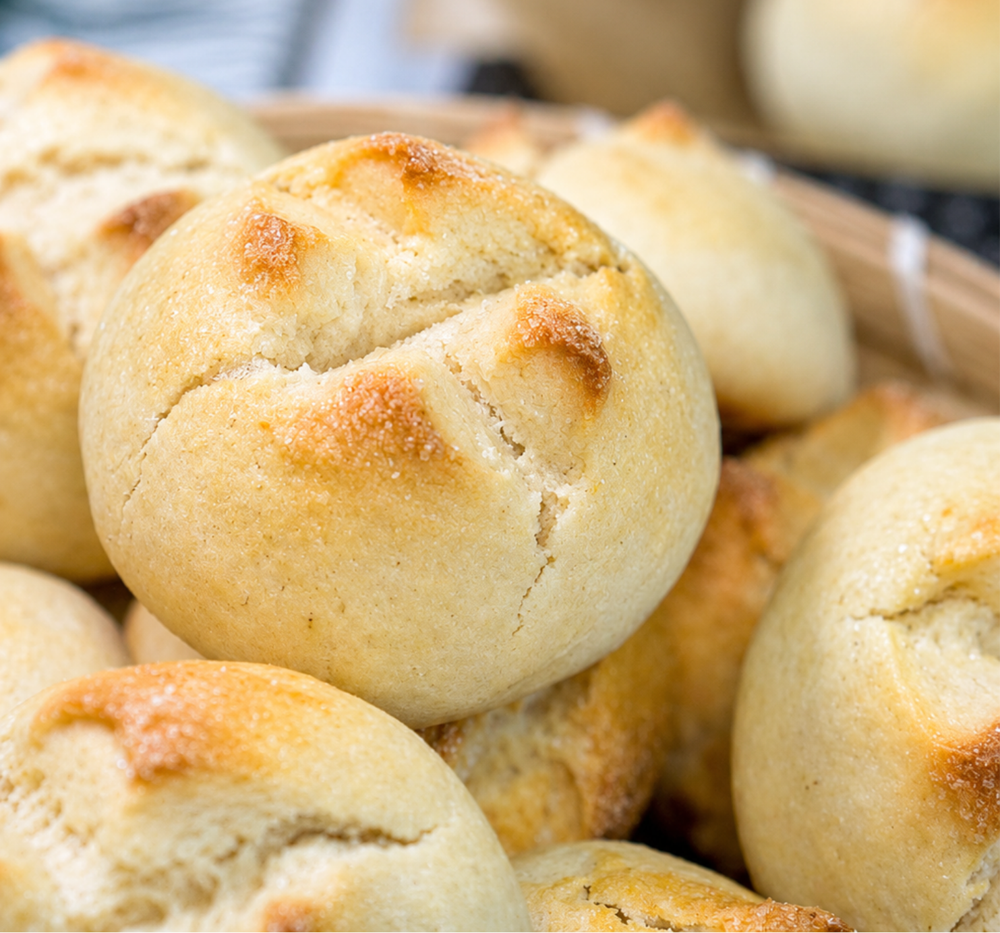

PUTOK
Recipe by: Mia

Putok (Star Bread) is a bread made in the Philippines which has a star shape. The bread has a crisp and sugary outer layer with a soft inside. It is a mild sweet bread available in many neighborhoods bakeries.
Ingredients:
- 1 1/2 cups bread flour
- 1/2 cup cake flour
- 6 tbsp sugar
- 1/2 tsp instant yeast
- 1/2 tsp baking powder
- 1/4 tsp salt
- 28 grams vegetable shortening (or margarine/butter)
- 3/4 cup warm water
- 2 tbsp powdered milk
- 1 egg (for eggwash)
- sugar (for topping)
Instructions:
- In a bowl. Mix bread flour, cake flour, sugar, powdered milk, baking powder, salt and instant yeast.
- Make a well in the center of the mixture and add vegetable shortening, and warm water. Using a spatula or wooden spoon, mix well until incorporated and turns into a rough dough.
- Grease work surface with vegetable shortening then place dough on top. Knead for at about 10-15 minutes until dough becomes smooth, heavy but not stretchy. Shape dough into a ball and divide in two parts.
- From one part of the dough, cut a portion and weigh approx. 80 grams using a kitchen scale. Repeat the process until remaining dough is weighed then shape into smooth, small buns.
- Transfer the buns into a baking tray lined with parchment paper. Cover with kitchen towel for 30 minutes to rest. NOTE: The dough will not rise since it's a dense bread. Pre-heat oven at 200°C.
- To make the star bread's signature crack on top. Slit an "x" or star slice on top of the dough using a scissor or sharp knife.
- Before baking, brush the top of the buns with egg wash then sprinkle sugar. Bake the bread for about 15-20 minutes or until the top is lightly browned. Remove from oven and let it cool. Bon appetit!